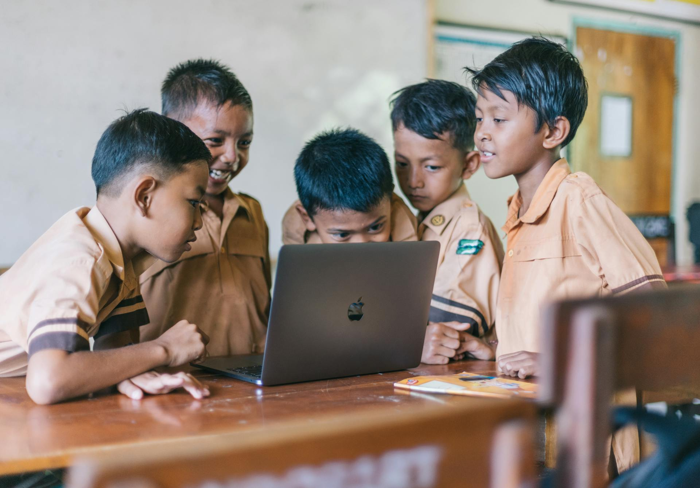

Breaking Social and Economic Barriers Through Education

Education is a fundamental right and serves as a powerful tool for personal and societal transformation. It equips individuals with knowledge, skills, and
critical thinking abilities essential for navigating life's challenges. Access to quality education is crucial, as it can greatly reduce poverty,
promote equality, and enhance social mobility.
When individuals are educated, they have better employment opportunities, which can lead to higher incomes and improved living standards.
This, in turn, contributes to economic growth within communities and nations. Furthermore, education fosters an informed citizenry, empowering people to make
responsible decisions and engage actively in democratic processes.
Quality education also plays a significant role in promoting social equality. It provides individuals from all backgrounds, regardless of their
socioeconomic status, with the tools they need to succeed. By breaking down barriers to education, we can help create a more just and equitable society where
everyone has the chance to thrive.
1. Addressing Educational Challenges in Low-Income Countries
In many poor countries, education systems face daunting challenges that inhibit both personal and national growth. These difficulties create a
cycle of poverty that is hard to break, affecting millions of individuals who deserve the chance to escape their circumstances.
Let's dive into some of the key issues that low-income countries face in providing quality education:
- Limited Resources are a major hindrance in these educational environments. Schools often lack essential supplies such as textbooks, technology, and qualified teachers, resulting in subpar educational experiences for students. This deficiency not only stifles learning but also hampers future opportunities.
- High Costs of Education can burden families already struggling to make ends meet. The expenses associated with schooling—including fees, uniforms, and materials—can become overwhelming. Many families are forced to choose between education and survival, leading to increased dropout rates and limiting children's futures.
- Inadequate Infrastructure poses another serious problem. In rural areas, the absence of schools or the long distances to reach them can deter attendance, particularly for girls. Without proper facilities, the educational experience suffers, further contributing to the cycle of inequality.
- Social and Cultural Barriers also play a significant role in educational access. In many communities, societal norms prioritize boys education over girls, perpetuating gender disparities and limiting female empowerment. Addressing these biases is essential for fostering an inclusive educational environment.
- Conflict and Instability disrupt education in many regions. War, political unrest, and natural disasters can render schools inaccessible, forcing children out of the classroom and into dangerous situations. The loss of educational opportunities exacerbates the challenges faced by these young people.
- Lack of Trained Educators. In many impoverished areas, well-trained teachers are in short supply. Teacher shortages lead to overcrowded classrooms and diminished educational quality, leaving students without the guidance they need to thrive.
- Language Barriers can also impede learning in multilingual settings, where the language of instruction may differ from students’ native tongues. This disconnect can alienate learners and hinder their academic progress.
- Health Issues further complicate the educational landscape. Poor nutrition and lack of healthcare can diminish children’s capacity to learn, while sickness can frequently keep them from attending school altogether. This creates a barrier that can be nearly insurmountable for many families.
- Economic Pressures that often prioritize immediate survival over education. Children may be compelled to work to support their households, making education seem secondary in importance—a tragic reality that limits future opportunities.
- Limited Access to Higher Education. While primary education may be attainable, opportunities for secondary and tertiary education are frequently scarce, resulting in wasted potential and stalled economic growth.

2. Solutions to Overcome Educational Challenges in Developing Countries
To combat these profound challenges, a multifaceted approach is essential.
- Increased Investment in Education. Governments and international organizations should allocate more funding to improve school resources, including infrastructure, teaching materials, and technology. Investment in education can provide better learning environments and attract qualified teachers.
- Subsidizing Education Costs. Implementing programs to subsidize school fees, uniforms, and materials can alleviate the financial burden on families. Scholarships and grants targeted at low-income families can help ensure that children can attend school without sacrificing their family's basic needs.
- Improving School Infrastructure. Establishing more schools in remote and rural areas is critical, as is ensuring existing schools are well-maintained and equipped with necessary facilities. Transportation systems can also be developed to help students access schools more easily.
- Promoting Gender Equality in Education. Community programs and awareness campaigns can challenge societal norms that prioritize boys’ education over girls’. Providing safe transportation, scholarships for girls, and emphasizing the importance of female education can empower families to send their daughters to school.
- Conflict Resolution and Stability. International organizations should work to promote peace and stability in conflict-affected regions. Establishing temporary learning spaces in safe zones during conflicts can help ensure that children continue to access education.
- Teacher Training and Recruitment. Initiatives to attract and train teachers in underserved areas can help address the shortage of qualified educators. Professional development programs can upgrade existing teachers' skills, helping improve the overall quality of education.
- Health and Nutrition Programs. Schools can implement health and nutrition programs to ensure that children are physically able to learn. Providing meals at school can encourage attendance and improve students' concentration and academic performance.
- Language Support Services. Offering language support programs, such as bilingual education, can help students who are not proficient in the language of instruction. This can help bridge communication gaps and foster better learning outcomes.
- Community Engagement and Economic Support. Community programs that educate parents about the benefits of education can shift priorities toward schooling. Providing economic support, such as vocational training for parents, can reduce the need for children to work to support the family.
- Expanding Access to Higher Education. Developing partnerships with universities and vocational institutions can create pathways for secondary and higher education. Offering financial aid, scholarships, and flexible learning options can help students transition smoothly into advanced education.
By implementing these solutions, stakeholders can create a more equitable and effective educational system that enables children to escape the cycle of poverty and realize their full potential.
